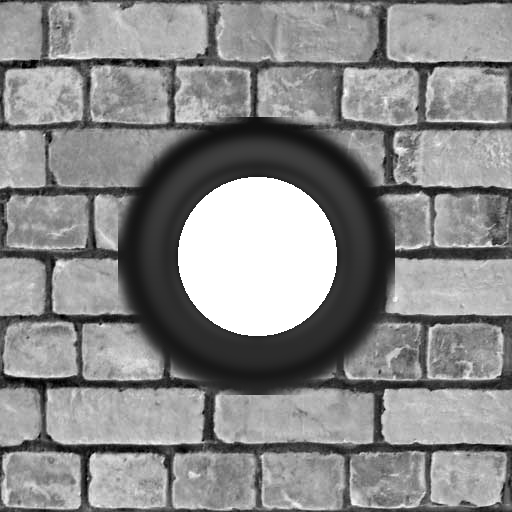
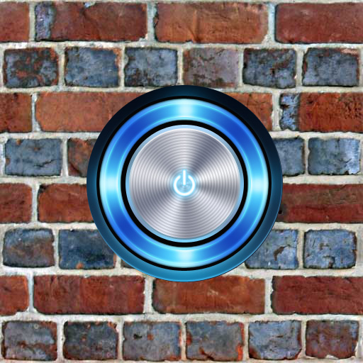

Memoria de la Sesión 4
Descripción de la práctica
En esta sesión se han introducido elementos interactivos de colisión, selección (Raycast) y multimedia (sonido espacial en 3D, texturas interactivas y vídeo).
Ejercicio 1 - Audio Posicional
Se introdujeron cajas estáticas y se les aplicó la capacidad de emitir sonido posicional. Al acercarse la cámara, el audio se amplifica, y al alejarse se atenúa.
Ejercicio 2 - Selección de objetos (Raycaster)
A través de la clase THREE.Raycaster y la normalización de la posición del ratón en la pantalla generamos un rayo desde la cámara y determinamos con qué caja intersecaba el cursor, mostrando el evento por la consola.
Ejercicio 3 - Interacción y conmutación de texturas
Se agregó soporte para interrumpir y reanudar el sonido empleando la combinación del objeto seleccionado (raycaster) y pulsar la barra espaciadora. Además, se proporcionó retroalimentación visual sobre las caras frontales con texturas de botones de apagado/encendido (textura_off.png / textura_on.png).
Ejercicio 4 - Detección de colisiones
Para dotar a la cámara de volumen físico e imposibilitando atravesar las cajas, se estableció un conjunto de movimientos posibles y se calcularon intersecciones a cada paso clock.getDelta() en el plano horizontal (8 vías direccionales). Si había una colisión inminente (a 20 unidades o menos), se deshacía la trayectoria (`-delta`).
Ejercicio 5 (Extra) - Reproductor de Vídeo Interactivo en Escena 2D
En el último avance creamos una malla sobre un objeto PlaneGeometry para actuar como pantalla y cargar una THREE.VideoTexture ("sintel.mp4"), sustituyendo las funcionalidades previas de sonido. Activando la caja izquierda con espacio iniciamos su reproducción y activando la derecha la pausamos, alterando también las texturas para indicar el estado de reproducción/pausa correspondientemente.
Capturas Significativas
Apreciaciones visuales de los elementos.


Dificultades encontradas y Soluciones
- Mapeo de Rutas (Webpack): Ocurrió un error inicial en el archivo interno `webpack.config.js` porque intentaba construir los archivos correspondientes a las sesiones pasadas (`prac3-x`). Fue solventado reemplazando los entry points a la nomenclatura actualizada (`prac4-x.js`).
- Carga de textura fallida (Negro Sólido): La documentación dictaba cargar los botones como `.jpg`, sin embargo, los ficheros proporcionados se trataban de extensiones `.png`. Se reparó corrigiendo las extensiones en las dependencias para evitar que cargase texturas huérfanas o vacías de color negro.
- Orientación de cubos: A la hora de mapear la textura de los botones frente al origen, se observó que la geometría de `BoxGeometry` en combinación con la matriz de materiales asignaba el botón del cubo izquierdo en su cara `+X` y el botón del cubo derecho en su cara `-X`. Se resolvió referenciando la textura dinámica hacia estos índices concretos del array del material individual de cada caja respectiva.
Respuestas a las cuestiones
¿Por qué cargar y guardar las dos texturas inicialmente y sólo intercambiarlas (evitar sobrecarga)?
Instanciar un nuevo cargamento estático de imagen (vía HTTP/DOM) e inicializar un Material asociado o enviar nuevos recursos de píxeles hacia la tarjeta gráfica (VRAM) continuamente produce desajustes o parones (stutter) en los fotogramas (frame-times). Al pre-cargar en variables ambas texturas estáticas al principio, la memoria GPU dispone de ellas directamente, agilizando instantáneamente la llamada de intercambio (únicamente levantando el flag de needsUpdate = true).
¿Por qué la detección de colisión simple revirtiendo el `controls.update(delta)` no es muy robusta con FirstPersonControls?
Porque los controles calculan en base a esferas polares matemáticas para la cámara. Deshacer el update revirtiendo el tiempo (empleando un paso `delta` negativo) puede generar desincronización por coma flotante / redondeo o que el raycaster siga detectando la barrera inmediatamente a la vez que no te permita salir, enjaulándote o saltándose esquinas agudas. Además deshacer no tiene en cuenta la rotación de "look" o las interpolaciones del ratón.